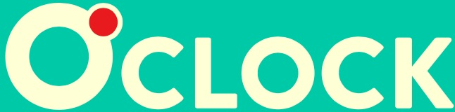
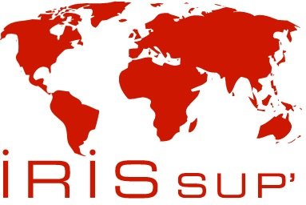
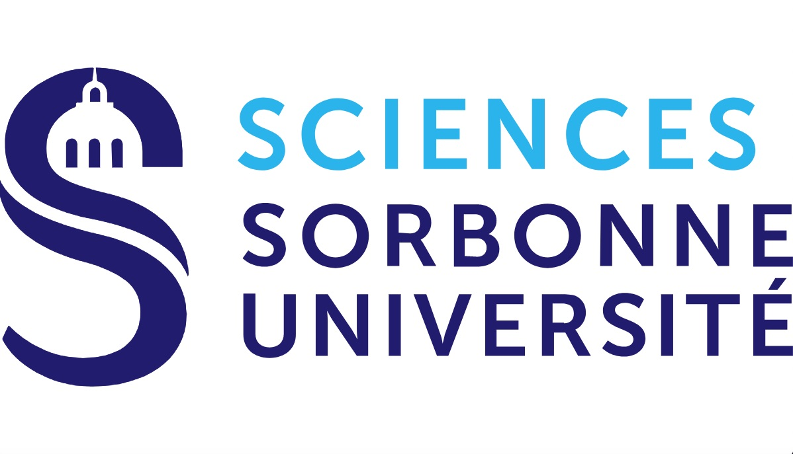

Quentin Leroy
Learning web development with 
Project manager for the Elise Care association in 2017-2018, I had the opportunity to follow up on donor contracts and to write several grant reports, in particular for the United Nations Voluntary Fund for Victims of Torture. In addition, I participated in improving the data collection and reporting of data phase during several field missions to IDP camps in Iraqi Kurdistan. This experience allowed me to strengthen my skills in defining and monitoring reliable indicators for humanitarian projects.
In addition, my study project at IRIS Sup' school was carried out in group under the supervision of an English-speaking person based in London. The aim was to strengthen the creation of multi-stakeholder partnerships in an emerging country where civil society is highly active. This project for the benefit of the IARAN consortium was coordinated through the organization of multiple meetings and the drafting of project documents all in English.
I also have a rich operational experience in the emergency field as a firefighter in Paris. From 2013 to 2015, I was in direct command of a fire and rescue company for the benefit of populations located to the north of Paris and in Seine-Saint-Denis. In addition, in 2015-2016, my duties led me to coordinate several projects in the areas of human support and information technology at the level of the general Staff. Highly organized and autonomous, my various experiences have enabled me to develop a capacity of analysis and synthesis useful in the management of complex projects.
Now, my new dream is to become a fullstack JavaScript developper in 2021.
Featured IT Projects
View selected projects below. More information can be found at my repository at github.com.

Project : learning vocabulary faster
Help you to learn your foreign language vocabulary faster taking into account the time it takes to learn it and forget it .
View projectWork Experience
To see my complete work history, go to my LinkedIn page
ODEEF
January to april 2020
Fundraiser
Face-to-face fundraising for Doctors without Borders
Mission in shopping centres in the Paris region
ONG Conseil France
December 2019 to january 2020
Fundraiser
Face-to-face fundraising for Doctors of the World
Mission on the street in the Paris region
Education

IRIS Sup' - Paris
Master level in Humanitarian project management, 2017-2018
Thesis: "The psychological care of Yezidi women and children victims of the exactions of the Islamic State from 2014 to 2017". (field study in Iraqi Kurdistan in July 2017)
Project in partnership with the IARAN consortium: "Facilitating by 2022 the emergence of collaborative multi-stakeholder partnerships between local structures in Ivory Coast".

Pierre and Marie Curie university - Paris
Bachelor in Sciences and technologies in physics, 2011-2012
Statistics, thermodynamics, quantum world, history of science, English
Project: study of the development of a fire inside an underground car park, place Vendôme Paris